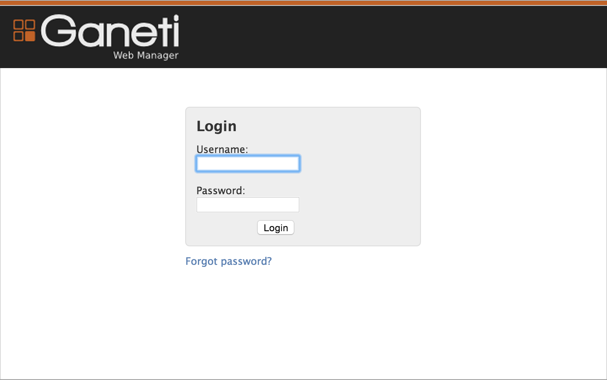
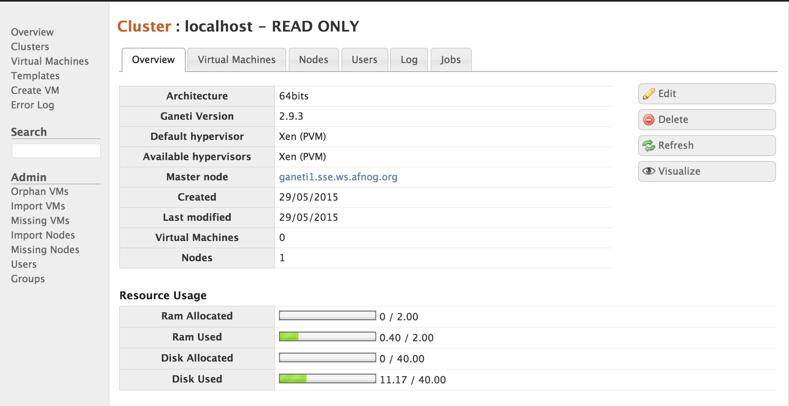

Ganeti is a virtual machine cluster management tool developed by Google. The solution stack uses either Xen or KVM as the virtualization platform, LVM for disk management, and optionally DRBD for disk replication across physical hosts.
We will install Ganeti in a virtual machine, configure it to use the Xen hypervisor, and use it to create and manage some virtual machines.
Normally you would install this on your physical hosts. We are using it in a VirtualBox virtual machine which is pretending to be our physical host, because we don’t have enough physical boxes for everyone. This forces us to use Xen (which is slower than KVM) because we can’t use KVM inside a VirtualBox virtual machine. You could use either for a real deployment. The installation process is slightly different. KVM is not covered here.
Install VirtualBox or make sure you are running version 4.3 or higher.
Open VirtualBox Preferences > Network > Host-Only Adaptors. Ensure that you have at least two listed: vboxnet0 and vboxnet1. If not, click on the Add button to the right of the list to create them.
Double-click on vboxnet0 and check that the IP addresses are as follows:
And check that the DHCP server is enabled and configured for:
If you have made any changes, then exit and restart VirtualBox, otherwise this change will not take effect, as we discovered after an hour of debugging!
Create a new VM called Ganeti Demo. Give it 2 GB RAM and a 40 GB VDI disk, dynamically sized.
Start the VM and attach the Ubuntu 14.04 Server 64-bit CD. Read the following sections before you start the installation, and use them at the appropriate times during the installation.
You must use a fully qualified hostname, for example ganeti.pcXX.sse.ws.afnog.org.
The server should use LVM for disk space, so instead of the default Guided Partitioning, choose Manual, then SCSI3, then:
xenvg.### Proxy Server
When asked for a proxy server, enter this one (to save a LONG install time):
Please enter this carefully and check it. Using the wrong value will make it impossible for you to install any packages. Of course, if you are not at the AfNOG workshop then this server will no longer exist, so use a local proxy server or leave it blank.
While the installation proceeds, familiarise yourself with the terminology of Ganeti.
After installation, shut down the machine and reconfigure its network interfaces in VirtualBox

Then start the machine again. Log in on the console and edit /etc/network/interfaces to look like this:
# The loopback network interface
auto lo
iface lo inet loopback
# The primary network interface
auto eth0
iface eth0 inet dhcp
auto eth1
iface eth1 inet manual
auto xen-br0
iface xen-br0 inet static
address 192.168.56.10
netmask 255.255.255.0
bridge_ports eth1
bridge_stp off
bridge_fd 0
Edit /etc/hostname and put the fully-qualified hostname (FQDN) in there.
Edit /etc/hosts and ensure that it contains the IP address and hostname of
your host. You will also need to choose a name (hostname) and IP address for
your cluster, which must be different. For example:
127.0.0.1 localhost
192.168.56.10 ganeti1.sse.ws.afnog.org
192.168.56.11 cluster1.sse.ws.afnog.org
Normally you would add DNS entries for all of these. Feel free to use the DNS
for the cluster name, instead of editing /etc/hosts. Your hostname should
really be in the DNS as well, but for the purposes of this exercise
(non-production deployment) it doesn’t matter too much.
Edit /etc/default/grub and add the following line:
GRUB_CMDLINE_XEN_DEFAULT="dom0_mem=min:384M,max:384M"
This restricts the master domain to 256 MB RAM, which will make it slow, but give us more RAM free for guests. In your own configurations you should probably allocate more RAM to the host (domain 0)!
Then run the following commands:
sudo update-grub
sudo apt-get dist-upgrade
sudo apt-get install ganeti2 ganeti-htools ganeti-instance-debootstrap xen-hypervisor-amd64
Edit /etc/xen/xend-config.sxp and change the following setting:
(enable-dom0-ballooning no)
Then reboot the host and log in again.
Start following the Ganeti installation tutorial, skipping the following sections:
Run the following command, substituting the cluster name you added to
/etc/hosts instead of cluster1...:
sudo gnt-cluster init --vg-name Main --enabled-hypervisors=xen-pvm -H xen-pvm:xen_cmd=xl cluster1.sse.ws.afnog.org
Note: Normally you would use either xen-hvm or kvm as the hypervisor,
instead of xen-pvm above. In this case we must use xen-pvm because we are
doing this inside a virtual machine, so we can’t use the virtualisation CPU
instructions because VirtualBox is already using them to run the Ganeti host
node (VirtualBox guest).
Create the file /etc/ganeti/vnc-cluster-password containing the password that
you want to use for VNC access to consoles.
Check that the gnt-node list command shows your node:
$ sudo gnt-node list
Node DTotal DFree MTotal MNode MFree Pinst Sinst
ganeti1.sse.ws.afnog.org 40.0G 28.8G 2.0G 1.9G 126M 0 0
Warning: If you see question marks in all the columns after the node name, like this:
$ sudo gnt-node list Node DTotal DFree MTotal MNode MFree Pinst Sinst ganeti1.sse.ws.afnog.org ? ? ? ? ? 0 0that means that Ganeti cannot retrieve information about your node. Check the node daemon logfile
/var/log/ganeti/node-daemon.logfor possible error messages. For example, if you find this error:ERROR Can't retrieve xen hypervisor information (exited with exit code 1): ERROR: A different toolstack (xl) have been selected!that means that Ganeti is trying to use the old
xmcommand to get information, instead of the newxlcommand, and not getting any information. You probably forgot to add the option-H xen-pvm:xen_cmd=xlwhen you created the cluster. You can fix it by modifying the cluster settings on the node:sudo gnt-cluster modify -H xen-pvm:xen_cmd=xland check that the
gnt-node listnow shows the correct information for your node.
You should also make sure that the MFree column shows at least 1 GB free (not
126 MB as in the example output above). This ensures that there is enough RAM
free in the hypervisor to create new guests. Otherwise you won’t be able to do
much with your new hypervisor. If it doesn’t show enough free RAM, check that
you have reconfigured GRUB and run
update-grub.
Add an entry to /etc/hosts for a host to use for burnin testing, for example burnin.example.com.
Run the burnin test to make sure that everything is working properly:
sudo /usr/lib/ganeti/tools/burnin -o debootstrap+default -t plain --disk-size 1024 burnin.example.com -vv
Continue following the installation instructions from Testing the setup
Choose a username and password for your remote account (jack and mypassword in this case) and
generate a hash using echo and openssl md5 like this:
$ echo -n 'jack:Ganeti Remote API:mypassword' | openssl md5
(stdin)= 5ede44dba4dd4e9ce3909246515b2cdc
Insert them both into /var/lib/ganeti/rapi/user, prefixing the password hash
with {ha1}, and giving this user write permissions:
jack {ha1}5ede44dba4dd4e9ce3909246515b2cdc write
Download the latest release, for example 0.11.0. We have a local copy which you can download here:
wget http://197.4.11.251/ganeti_webmgr-0.11.0.tar.gz
Then run the following commands to install it:
sudo apt-get install fabric python-virtualenv python-dev libffi-dev libssl-dev patch apache2 libapache2-mod-wsgi
sudo mkdir -p /opt
tar xzvf ganeti_webmgr-0.11.0.tar.gz
sudo mv ganeti_webmgr-0.11.0 /opt/ganeti_webmgr
cd /opt/ganeti_webmgr
mv requirements/production.txt requirements/prod.txt
mv ganeti_webmgr/manage.py .
mkdir config
cp ganeti_webmgr/ganeti_web/settings/config.yml.dist config/config.yml
cd ganeti_webmgr/ganeti_web/settings
cp settings.py.dist ../settings.py
sudo chown -R www-data /opt/ganeti_webmgr
Apply a patch to make Fabric download Ganeti’s dependencies using a proxy. This should only be done at an AfNOG workshop, or an environment where you are forced to use a proxy:
wget http://197.4.11.251/ganeti.patch | sudo patch -p0
Then deploy the web interface:
sudo -i sh -c 'cd /opt/ganeti_webmgr; fab deploy'
Run this command to generate a new secret key:
openssl rand -base64 24
Edit config/config.yml and add the following lines at the end:
SECRET_KEY: "YZVfMJmDGfk9jSlZ+S6sAT2288he8cEX"
WEB_MGR_API_KEY: "YZVfMJmDGfk9jSlZ+S6sAT2288he8cEX"
Also change the EMAIL_HOST and DEFAULT_FROM_EMAIL lines, so that their values refer to your outbound server and your email address.
Save the file, and check the configuration for errors:
cd /opt/ganeti_webmgr
sudo -u www-data venv/bin/python manage.py syncdb --migrate
sudo -u www-data venv/bin/python manage.py runserver 0.0.0.0:8000
This will start the debugging webserver on port 8000, so you can check that everything is working by visiting http://192.168.56.10:8000. You should get a white page with a login and password box, but no styling (colours, images, etc.) If not, check the console output for error messages.
Create the file /opt/ganeti_webmgr/wsgi.py with the following contents:
import os
import sys
path = '/opt/ganeti_webmgr'
# activate virtualenv
activate_this = '%s/venv/bin/activate_this.py' % path
execfile(activate_this, dict(__file__=activate_this))
# add project to path
if path not in sys.path:
sys.path.append(path)
# configure django environment
os.environ['DJANGO_SETTINGS_MODULE'] = 'ganeti_webmgr.ganeti_web.settings'
import django.core.handlers.wsgi
application = django.core.handlers.wsgi.WSGIHandler()
Create the file /etc/apache2/sites-enabled/ganeti.conf with the following contents:
WSGIPythonHome /opt/ganeti_webmgr/venv
WSGISocketPrefix /var/run/wsgi
WSGIRestrictEmbedded On
<VirtualHost *:80>
ServerAdmin your-email-address@example.com
ServerName ganeti-server.local
ServerAlias 192.168.56.10
# Static content needed by Django
Alias /static "/opt/ganeti_webmgr/collected_static/"
<Location "/static">
Order allow,deny
Allow from all
SetHandler None
</Location>
# Django settings - AFTER the static media stuff
WSGIScriptAlias / /opt/ganeti_webmgr/wsgi.py
WSGIDaemonProcess ganeti processes=1 threads=10 display-name='%{GROUP}' deadlock-timeout=30
WSGIApplicationGroup %{GLOBAL}
WSGIProcessGroup ganeti
# Possible values include: debug, info, notice, warn, error, crit,
# alert, emerg.
LogLevel warn
<Location />
Require all granted
</Location>
</VirtualHost>
Now you should be able to access http://192.168.56.10/ (without the :8000 port specification) and see the login page with graphics:

Log in using the superuser account that you created during the syncdb
command, or if you have forgotten the details, run this command to create a new
one:
sudo -u www-data venv/bin/python manage.py createsuperuser
Choose Clusters from the menu on the left, and then click Add Cluster in the top right. Enter the following details:
Leave the other details blank, and click Add. Your new cluster should then appear with its specifications:
